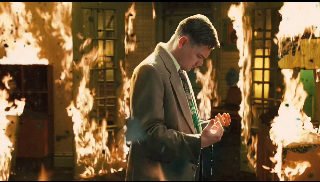
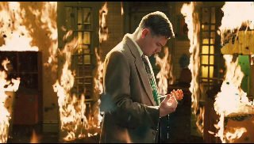
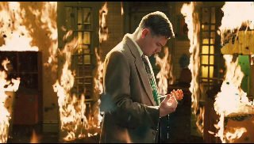
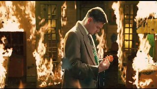

SHUTTER ISlAND is a classic Thriller. It's a story of a US Marshall named Teddy who was sent to investigate in mental sanatorium based in Shutter Island in order to find the murderer of his wife called Andrew Laeddis.
At this point you might think that this is a basic innvestigation story, but as long as the movie goes on you'll find out that this hole investigation was a mental experience to help the main character to overcome the death of his wife.
What i love about this movie is the twist of the story. So when you watch the movie for the first time, you would never guess the end.